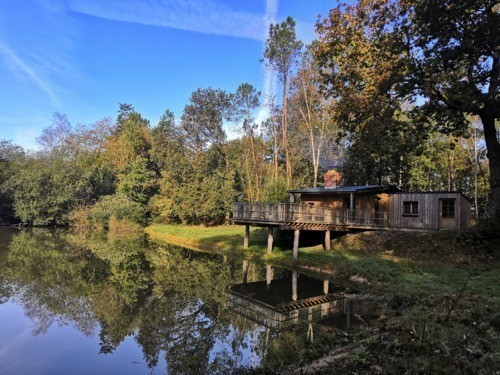

Randonnées pédestres à Maxent
Après la pause estivale, c’est la reprise des randonnées pédestres jeudi 24 septembre à Maxent.
En grande partie dans la forêt, le parcours de 9 kms est plat sans difficulté. Vous y découvrirez la Cabane de Bernoë et son étang, l’allée des séquoias, le sentier des Fagotous et bien d’autres allées…
Pour le co-voiturage depuis Bruz, le départ est à 13h30 parking d’Aldi ; rendez-vous 5mn avant. Vous pouvez aussi vous rendre directement à 14 h à Maxent, parking du terrain des sports situé à droite à la sortie du bourg en venant de Baulon.
Pour la pause, un appel aux bonnes volontés est lancé pour les pâtisseries ; rapprochez vous des organisateurs. N’oubliez pas d’apporter vos gobelets.
En espérant vous voir nombreux et au plaisir de se retrouver.
Joseph, Jacqueline, Sylvie et Christine

Prochaines randos mensuelles :
• 22 octobre
• 19 novembre
• 17 décembre